lolo的工作 最近开始上道了, 网络编程有很多可以说的东西; 这个是今天解决问题的时候遇到的, 就顺带整理一下;
- chrome开发者工具简介；
- HTTP请求之request；
- HTTP请求之response；
- postman工具对应开发者模式；
- 通过开发者模式分析接口；
- 小结
chrome开发者工具简介
工具主要页面:
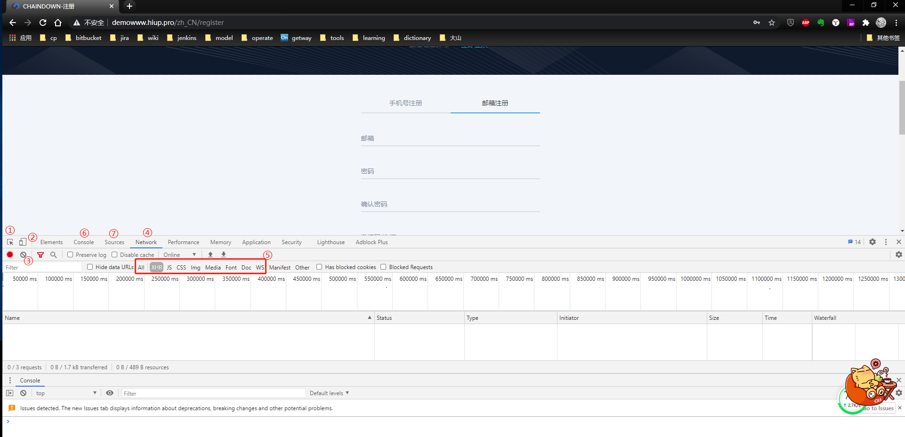
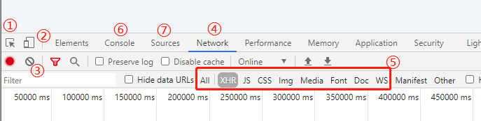
[↑]标注说明:
1.页面元素选取工具, 点击后可以选取页面HTML元素并定位到源码;
2.网页和H5模式切换, 当页面有区分web页面和H5页面的时候可以用于切换网页显示样式;
3.清除当前工作区信息, 当一个页面有很多请求时, 为了避免错过关键接口信息, 可以先清除一次, 再按F5刷新页面观察最新请求;
4.查看当前页面网络请求;
5.查看当前页面网络请求类型;
6.查看当前页面控制台;
7.查看当前网页所有源码;
一个抓取注册操作的简单示例
目前网络编程里使用的最多的, 就是4和5;
下面以一个注册操作为例, 演示一下抓取一系列接口的方式;
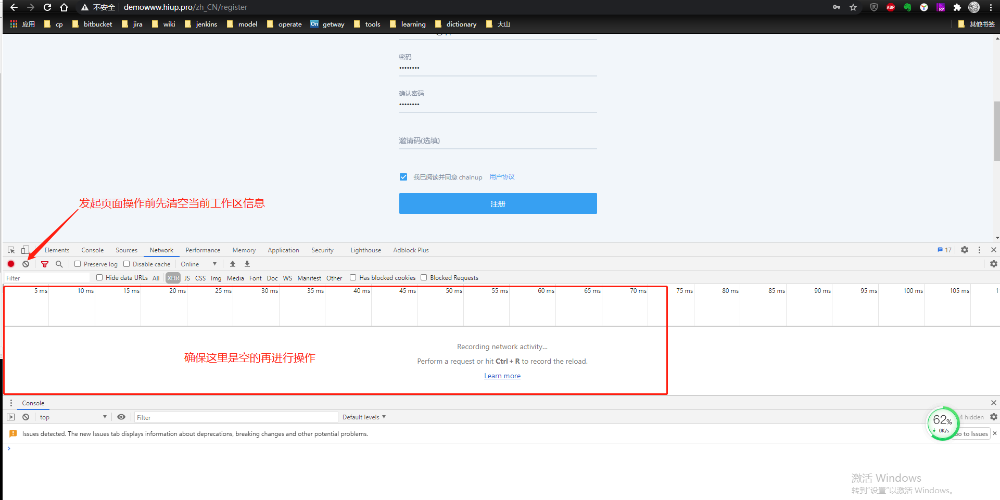
[↑]每次操作前记得清除工作区信息, 否则有的网页会有大量的实时订阅请求;
如果没有及时情况, 进行操作时可能会错过关键接口信息;
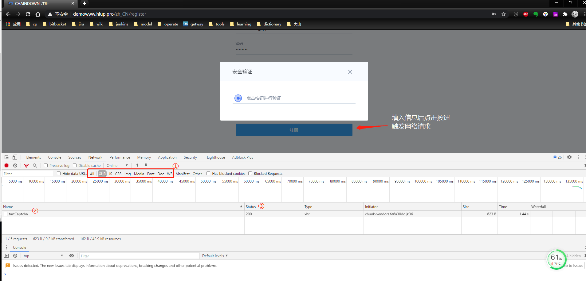
[↑]标注说明:
1.网络请求类型选择XHR;
XHR全称XMLHttpRequest,基本上页面里基于HTTP的接口请求都会在这个类型下展示;
2.当前操作发起网络请求的接口名称;
3.接口返回状态, 200为成功, 404为资源未找到,更多错误码可google”HTTP错误码”;
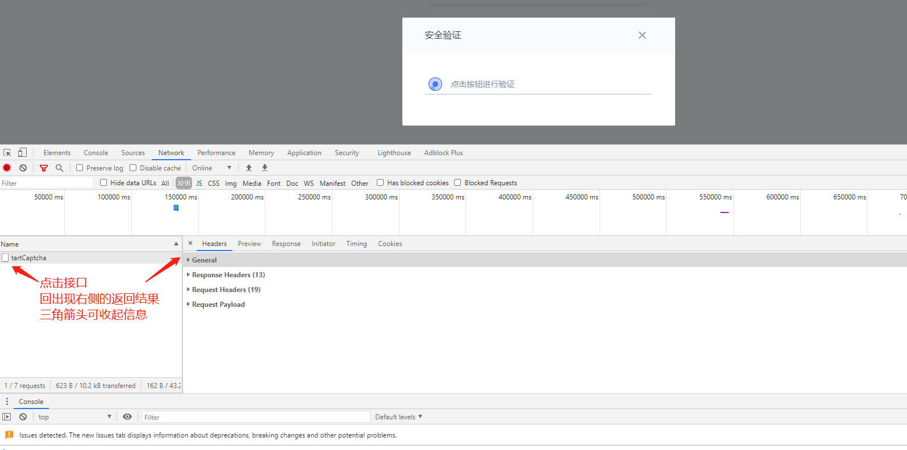
[↑]点击接口后可以看到右侧有接口的交互信息;
默认会展示第一个tab里的信息, 也就是Headers里的信息, 如上图所示; 收起来后可以看到总共信息有四类;
- General
- Response Headers
- Request Headers
- Request Payload
发起接口请求的信息
下面依次说明
General
Request URL: https://xxxwww.hiup.pro/fe-ex-api/common/tartCaptcha
Request Method: POST
Status Code: 200
Remote Address: 127.0.0.1:10011
Referrer Policy: no-referrer-when-downgrade
这里展示的是接口的完整请求url, 接口的请求方式, 如这个接口是POST请求;
接口的返回状态(200), 远程地址Remote Address等;
Response Headers
access-control-allow-headers: Content-Type,Content-Length, Authorization, Accept,X-Requested-With,exchange-token,exchange-language,exchange-client,exchange-time
access-control-allow-headers: X-Requested-With
access-control-allow-methods: PUT,POST,GET,DELETE,OPTIONS
access-control-allow-methods: GET,POST,OPTIONS
access-control-allow-origin: *
access-control-max-age: 86400
content-encoding: gzip
content-type: application/json;charset=utf-8
date: Tue, 15 Sep 2020 16:29:22 GMT
set-cookie: JSESSIONID=A29F82DDE9689FE11A4E4F587A38BFFE; Path=/; HttpOnly
status: 200
vary: Accept-Encoding
x-powered-by: Jetty
内容较多, 平常调试可以单独关注content-type和status即可; 前者为接口定义的请求类型, 如该接口为json数据类型;
Request Headers
:authority: demowww.hiup.pro
:method: POST
:path: /fe-ex-api/common/tartCaptcha
:scheme: https
accept: application/json, text/plain, /
accept-encoding: gzip, deflate, br
accept-language: zh,zh-CN;q=0.9,en-US;q=0.8,en;q=0.7,zh-TW;q=0.6
content-length: 1585
content-type: application/json;charset=UTF-8
cookie: changeSkin=undefined; defSkin=2; cusSkin=2; _ga=GA1.2.99497646.1595212330; lan=zh_CN; lan.sig=5VFF45jC8vSQTlmNRB6KJztI2LCB84eOEAeLk8Kay38; admin-token=4f63899a218580fe3ff60c1bab2d893558fb088382154da7aa1ee74bc0d1ba8f; _gid=GA1.2.1355659675.1600184524; JSESSIONID=FFE91F0B58F76393AE506297E4717232
exchange-client: pc
exchange-language: zh_CN
exchange-token: c5fa97c1140aafea1ef1e84b67503d5e0db18d0ca0ff4819a0ca3f24722407df
origin: https://demowww.hiup.pro
referer: https://demowww.hiup.pro/zh_CN/register
sec-fetch-dest: empty
sec-fetch-mode: cors
sec-fetch-site: same-origin
user-agent: Mozilla/5.0 (Windows NT 10.0; Win64; x64) AppleWebKit/537.36 (KHTML, like Gecko) Chrome/85.0.4183.102 Safari/537.36
内容较多, 这里通常为接口请求时和客户端商定的内容; 如上述内容中 exchange-language 和 exchange-token均为和客户端约定的自定义内容, 这些内容根据需求而定; 根据这些抓取的信息, 可以判断和客户端的通信是否和文档中约定的一致, 帮助排查问题;
Request Payload
securityInfo: “{“id”:””,”org”:”demowww.hiup.pro","timestamp":"2020-09-16 00:29:20”,”userAgent”:”Mozilla/5.0 (Windows NT 10.0; Win64; x64) … “os”:””,”os_version”:””,”resolution”:””,”timezone”:”Asia/Shanghai”,”ctime”:””,”mtime”:””}”
uaTime: “2020-09-16 00:29:20”
这里为直观的请求参赛, 可以看到是一个json对象securityInfo 和一个时间字段 uaTime
接口返回请求的信息
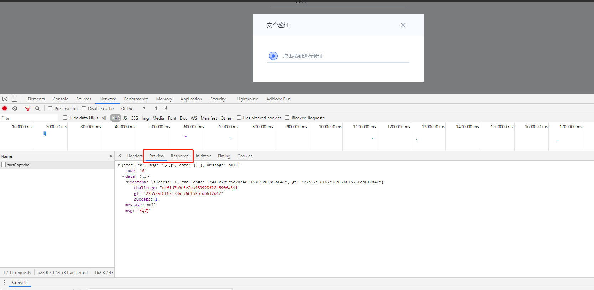
[↑]这两个tag为接口返回的参数;
preview 为预览视图, 可以点击展开查看返回的json格式内容
HTTP请求之request
简言之, Request是客户端向服务器发起的请求; 它由客户端按照两方约定的形式, 参数列表, 将需要操作的信息和参数传递给服务端;
请求头(Headers)和请求体(Body)
一个常规的httpRequest, 分别由 请求头 和 请求体 构成;
请求头, 在开发者工具中就是上面的 Request Headers;
而请求体, 则通常是发送的具体参数内容; 也就是上面的 Request Payload;
请求头用于封装公有的参数,包括接口请求类型, 编码格式等
请求体用于保存具体向服务端发送的参数内容
生活中我们常见到的外卖的小票, 也可以理解为是一种采用这种方式传递信息;
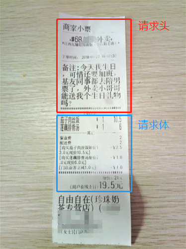
上图中, 可以看到小票被明显一条细横线, 两条*号构成的横线分开; 订单号和备注, 可以理解为小票的请求头; 用于告知接收者公共的和重要的信息;
而口袋中具体餐品的列表, 则可以理解为请求体, 也就是具体向服务端发起的参数内容;
当服务端接收到这样的一个请求后, 会先读取请求头, 确保接口请求的形式和公共信息是否和服务端约定的一致; 如果不一致, 可以放弃读取请求体, 直接拒绝这个请求; 这样就增加了网络请求的处理效率;
常见的案例, 就是当服务端接口约定了使用POST请求, 但客户端却发送的是GET请求, 这时候服务端就可以直接拒绝这个请求; 因为客户端采用哪种请求方式, 是写在请求头里的;
HTTP请求之response
Web服务器收到客户端的http请求，会针对每一次请求，分别创建一个用于代表请求的request对象和代表响应的response对象;
Response对象则用于返回客户端需要的请求数据, 或者是返回接口进行业务操作的结果;
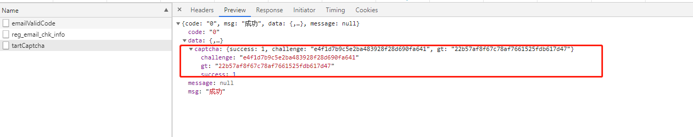
如上面的示例, 服务端返回了请求成功, 以及客户端需要的极验相关的信息;
postman工具对应开发者模式
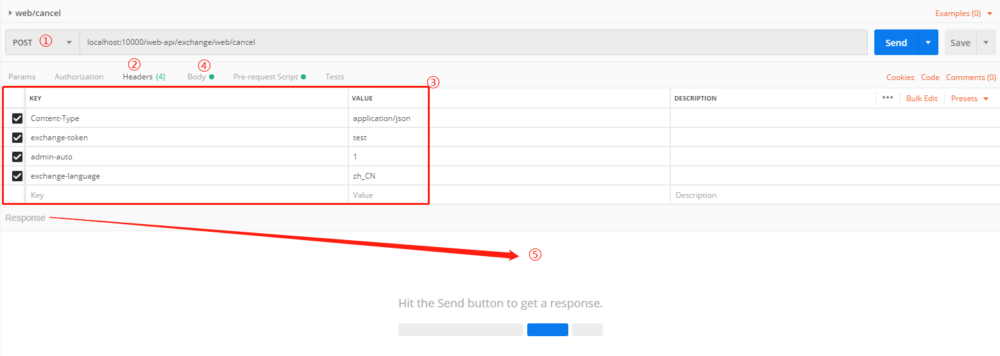
[↑] 标注说明:
1.接口请求类型, 这个也是包含在请求头里的内容之一;
2.这个Headers中的参数,就是需要输入的请求头内容;
需要注意的是,大部分接口不设置这个内容也可以访问, 但比如有接口限定了访问类型,就需要在这里设置;例如常用的参数Content-Type,就指定了接口参数的提交方式;
application/json 表明接口接收json格式的参数列表;
application/x-www-form-urlencoded 表明接口接收的是表单提交格式的参数列表;
3.请求头具体的内容;
4.请求体(也就是实际向接口发送的参数内容);
5.接口响应结果(Response)
下面用开发者工具中对应的位置和postman对比一下, 注意接口不是同一个接口, 只为了说明两个工具中对应元素的位置;
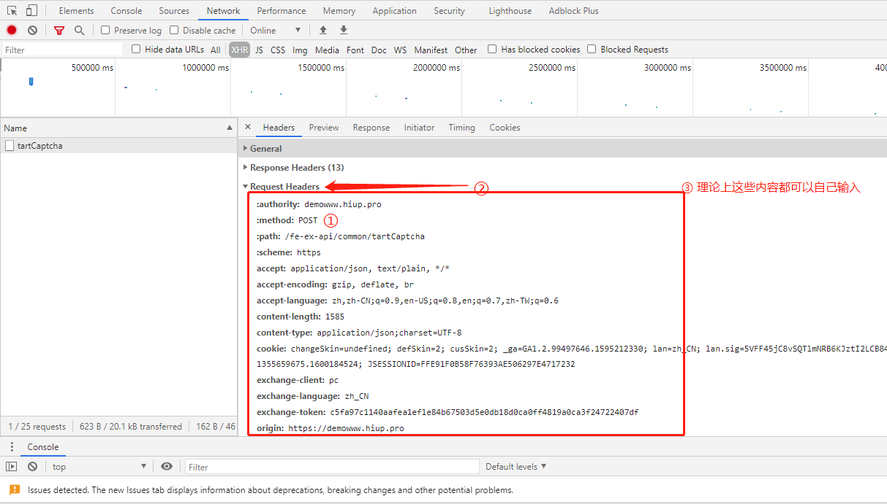
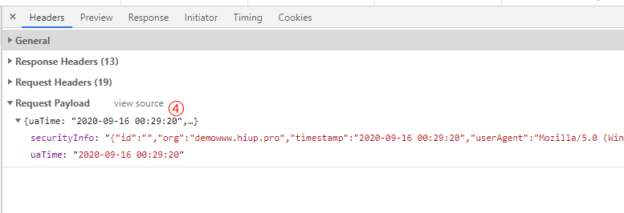
通过开发者模式分析接口
有了以上基础, 就可以使用开发者工具分析具体接口了;
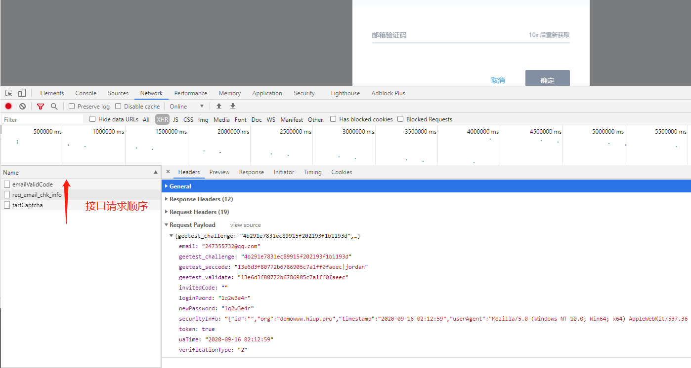
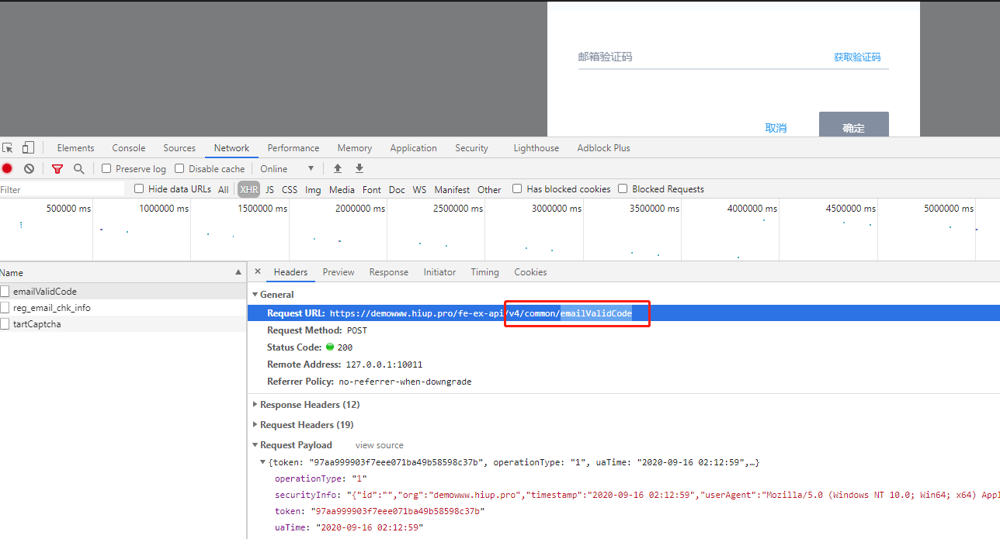
[↑] 在页面分部完成了通过极验验证,发送邮箱验证码两个操作;
可以从上面两张图中看到页面操作的网络请求顺序;
客户端分部按照 tartCaptcha – > reg_email_chk_info – > emailValidCode 的顺序向服务端发起了三次接口调用;
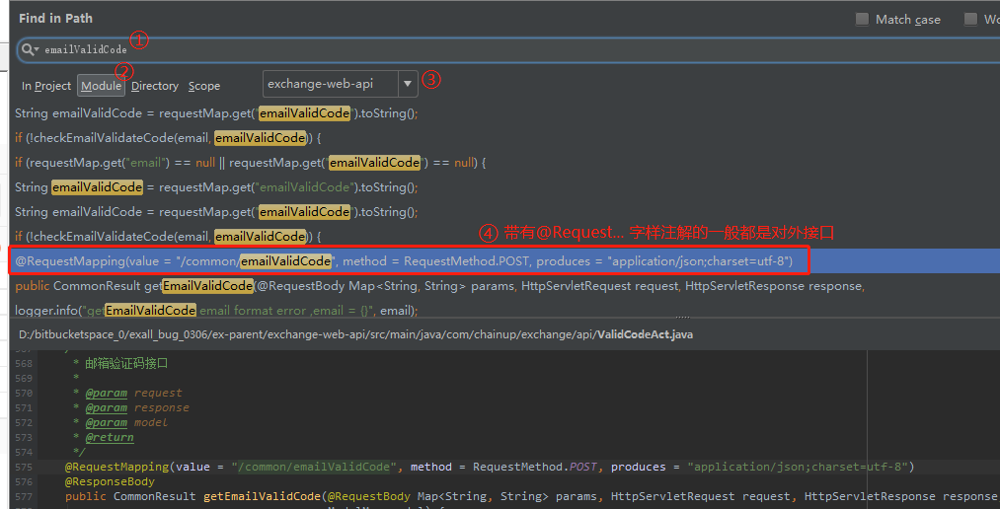
[↑] 标注说明:
1.全局搜索接口名字, 支持模糊查询;
2.查询范围选择Module, 按工程项目查询;
3.确认当前接口访问的是哪个服务端项目,可缩小查询范围;
这里需要对代码足够熟悉, 能够确认当前接口访问的是哪个项目; 因为同样的接口名称可能在多个项目中有相同的名字, 如果排查错了项目, 可能无法解决问题;
4.确认具体接口访问代码;
小结
- chrome开发者工具基本操作, 查看当前页面网络请求(Network); 查看当前页面网络请求类型(XHR);
- 抓取请求后主要关注点:General查看接口完整url; Request Payload查看请求参数;
- Request和Response的基本知识;
- postman工具和开发者工具进行对比, 理解如何自己设置请求头等信息;
- 如何使用开发者工具定位具体代码;
【The End】